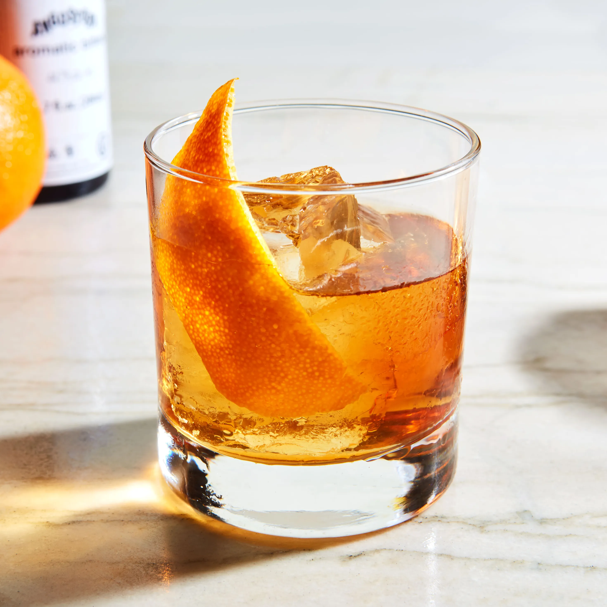

Old Fashioned cocktail

A strong drink to burry the pain :D
Ingredients you need
- 1 teaspoon sugar
- 1 teaspoon water
- 2 ounces bourbon
- Garnish:orange twist
- 3 dashes Angostura bitters
Steps for preparaton
- Add the sugar and bitters into a mixing glass, then add the water, and stir until the sugar is nearly dissolved.
- Fill the mixing glass with ice, add the bourbon, and stir until well-chilled.
- Strain into a rocks glass over one large ice cube.
- Express the oil of an orange twist over the glass, then drop into the glass to garnish.
Someone put this man behind the wheel!!!
Return to main menu